09_mongodb数据库使用流程
使用mongodb数据库的方式
安装：
在https://www.mongodb.org/dl/win32网址中下载64位mongodb数据库（本机是64位电脑，在此网址中下载即可）
在https://www.mongodb.org/dl/win32/i386网址中下载32位mongodb数据库。
下载完成后，双击进行安装，按提示点击即可。（注意下图中的默认选项取消，否则会下载的非常慢！原因是他会在中途帮你下载推荐的东西）
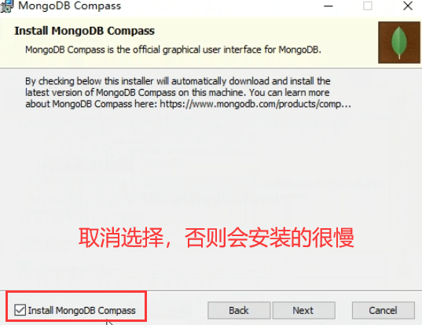注意：安装完成后在电脑上找不到这个软件图标。启动方式是通过cmd命令行进行启动。
使用:
一、启动mongodb数据库。
在cmd中输入命令mongod回车，看到 waiting for connections on port 27017表示mongodb数据库启动成功，等待连接。注意这个cmd命令行窗口不能关闭，否则会关闭mongobd数据库。
二、客户端连接mongodb数据库。
连接mongodb数据库有两种方式：
方法一：再打开一个cmd窗口，输入mongo命令（连接上数据库），输入show dbs;命令（查看有几个数据库）
方法二：使用mongodb客户端软件（注意：因为方法一通过输入命令操作数据库比较麻烦，本文使用方法二）。打开mongdb客户端软件，点击connect按钮进行配置，使mongodb客户端连接上mongodb数据库。（不用改动任何配置，使用默认即可，mongodb数据库的端口号是27017）
三、客户端操作mongodb数据库。
1.客户端常用命令
然后在该mongodb客户端软件中输入相关命令进行填写数据库。常用的命令如下：
// 删除当前使用数据库
db.dropDatabase();
//创建youshi数据库（创建后不会显示，必须有数据填入才能显示该数据库）
use youshi
// 向youshi数据库里的student集合下插入一条数据
db.student.insert({id:1,name:"花仙子"})
// 查看student集合下的所有数据
db.student.find()
// 删除student集合
db.student.drop();
db.dou_ting_ting.drop();
db.dou_ting_tings.find()
//删除集合下的数据
db.dou_ting_tings.remove({})
2.批量插入数据库的方法
1.例如通过记事本方式导入，把该写入数据的记事本放在桌面或者你需要放入的位置（记住路径）
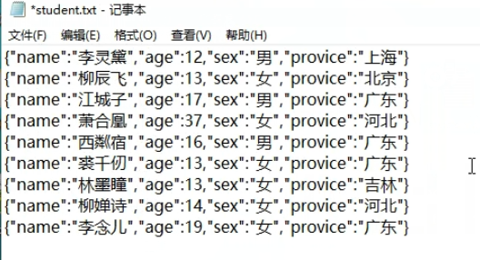打开新的cmd命令行，输入命令mongoimport -d igeek -c student ./student.txt（也就是mongoimport -d 数据库名字 -c 集合的名字 文件名 -d参数表示需要往哪个数据库导入数据，-c参数表示需要往哪个集合（表）中导入数据）
2.数据库导入成功，在mongodb客户端查看。（如何查看mongodb数据库都有哪些命令？在c盘/Program Files/MongoDB/Server/4.0/bin中文件名，去掉后缀，即是mongodb数据库的命令）
四、Vscode连接数据库。
然后在vscode中进行连接mongodb数据库，使后台能够操作数据库。
1.首先对vscode的文件夹进行一系列初始化操作（详情请看我的另外一篇文章）。
这里以node的express后台连接数据库为例：在vscode从终端打开中输入命令npm init -y出现package.json文件 ， npm install express出现node_modules文件夹，建立app.js文件，在app.js文件中输入
初始化操作完毕。
2.安装mongoose。在vscode中输入命令npm install mongoose（用node安装mongoose），这样能在后台能够通过node的mongoose去连接数据库。
3.在app.js中引入mongoose。
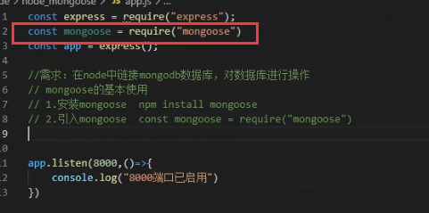4.使用mongoose连接数据库。
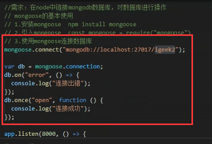5.输入命令nodemon app.js，显示“连接成功”说明数据库已经连接到后台了。
五、vscode操作数据库。
1.后端操作数据库
1.在app.js中声明一个Scheme
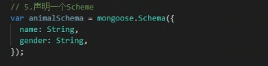2.在app.js中创建Model
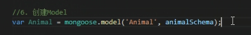3.在app.js中写接口并且向数据库的animal集合中插入数据
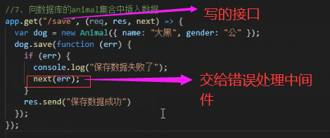测试该接口是否能用，在浏览器中输入localhost:8000/save，显示“保存数据成功”，说明接口创建成功。
补充：req为从浏览器获取数据，res为向浏览器发送数据。req.body()方法为后台从前台获取数据，res.send()方法为后台向前台发送数据。集合名.find()方法为在数据库中查找对应的条件，集合名.save()方法为保存到数据库，集合名.remove()方法为删除数据库中的数据。new 集合/对象名()为新建一个集合/对象（在数据库中叫集合，在代码中叫对象）。
4.打开mongodb客户端软件，刷新数据库，发现igeek数据库中原本只有student集合，现在多了个animals集合。（注意接口中写的是animal集合对应的就是animals集合，会多个s，记住必须是带s的，自己导入的数据库也得带s）
5.后端连接数据库完毕。
2.优化
1.在vscode中输入命令npm i art-template express-art-template
2.把下面代码注释掉
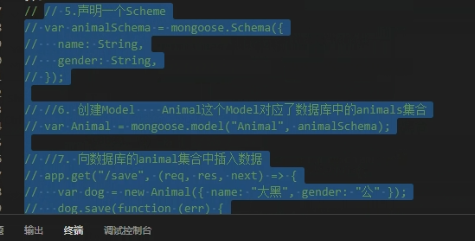3.新建一个views文件夹，并在views里新建一个student.html文件。
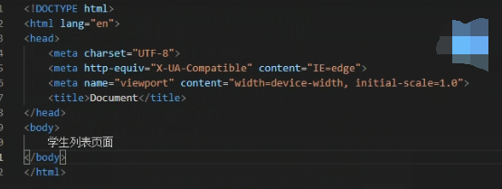4.在app.js中配置art-template
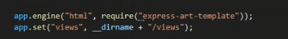5.写接口
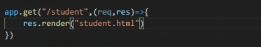输入命令Nodemon app.js启动端口
在浏览器中输入localhost:8000/student，显示“学生列表页面”表示写接口成功。
6.建立router文件夹，在router文件夹中建立student.js文件。写入代码
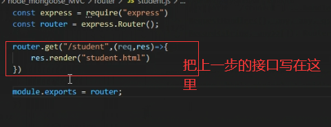并把上一步在app.js中写的/student接口去掉。
7.在app.js中写入。这样我们就把接口写在router文件夹里去了。
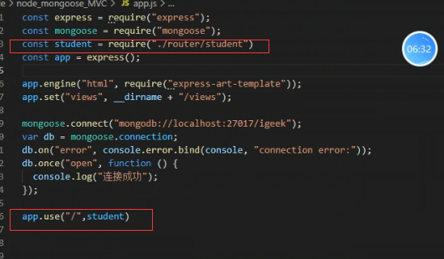8.连数据库查数据。创建一个models文件夹（放所有和数据相关的代码），在models文件夹中建立student.js文件。写入如下代码

9.在接口中查数据。也就是在router/student.js中查数据
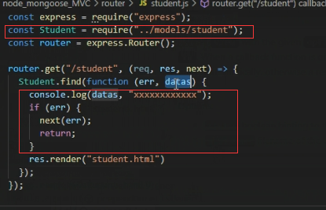补充：
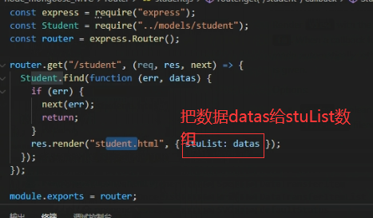10.后端重构完成
3.前端使用数据库
1.在前台页面渲染数据。
在views/student.html中写入代码：
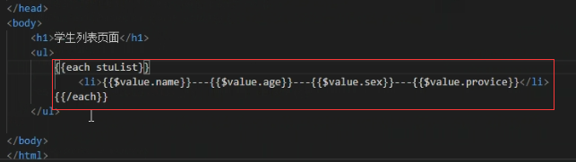 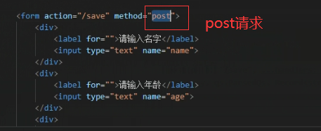 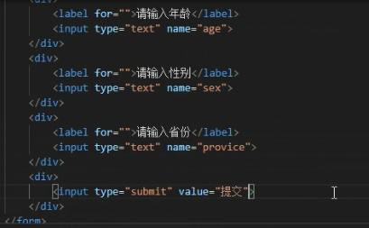显示效果如下：
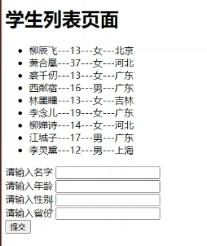表单已经有了，需要提交给后台，因为form表单提交用的post请求，则后台需要有接口，并且是post请求。
2.写post接口：在router/student.js中写入

3.如何从post请求获取参数？安装body-parser，输入命令npm install body-parser
在app.js中引入body-parser，并配置
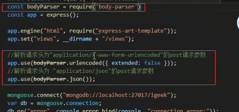然后重启接口，输入命令nodemon app.js
4.在router/student.js中写入
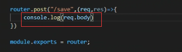 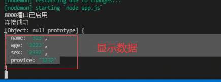5.把数据保存到数据库：
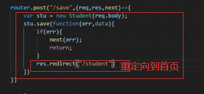6.结束。
本作品采用 知识共享署名-非商业性使用-禁止演绎 4.0 国际许可协议 进行许可。